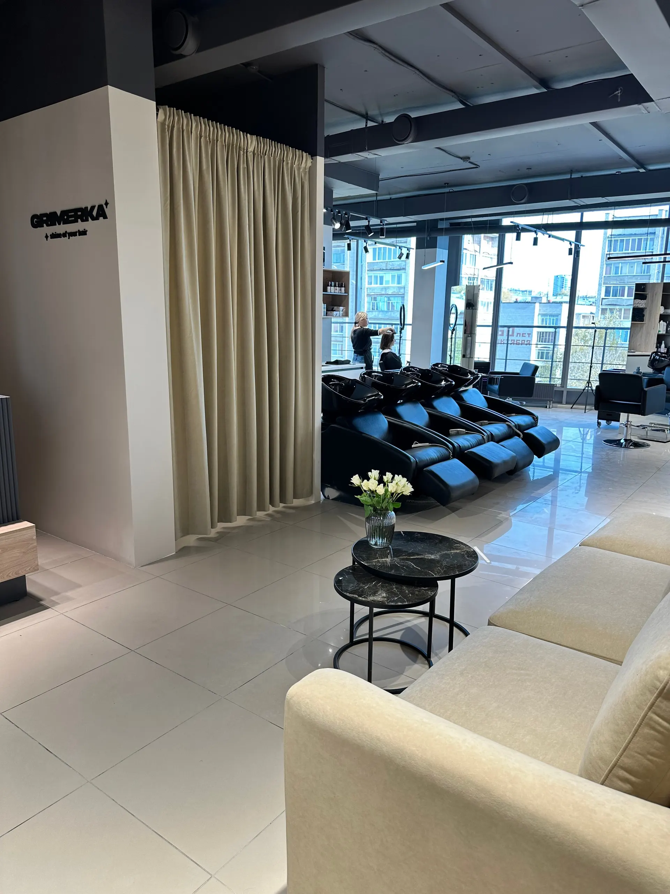
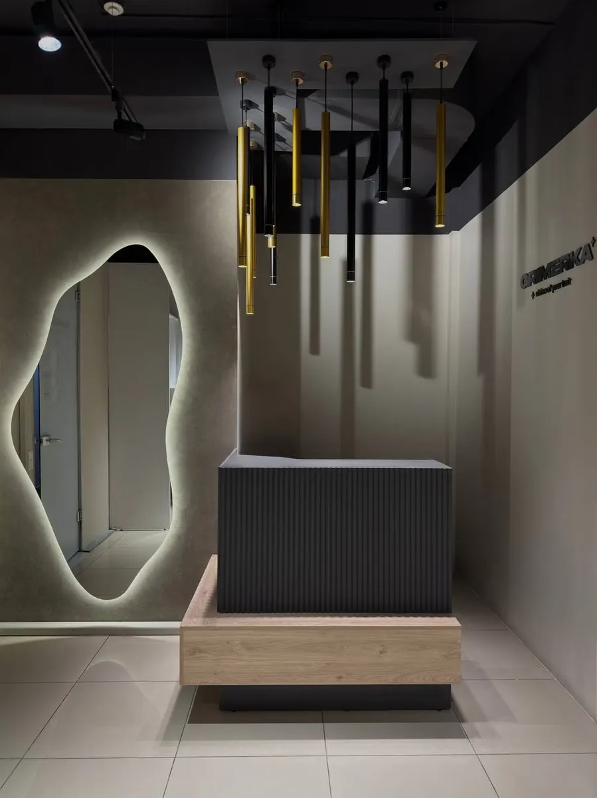
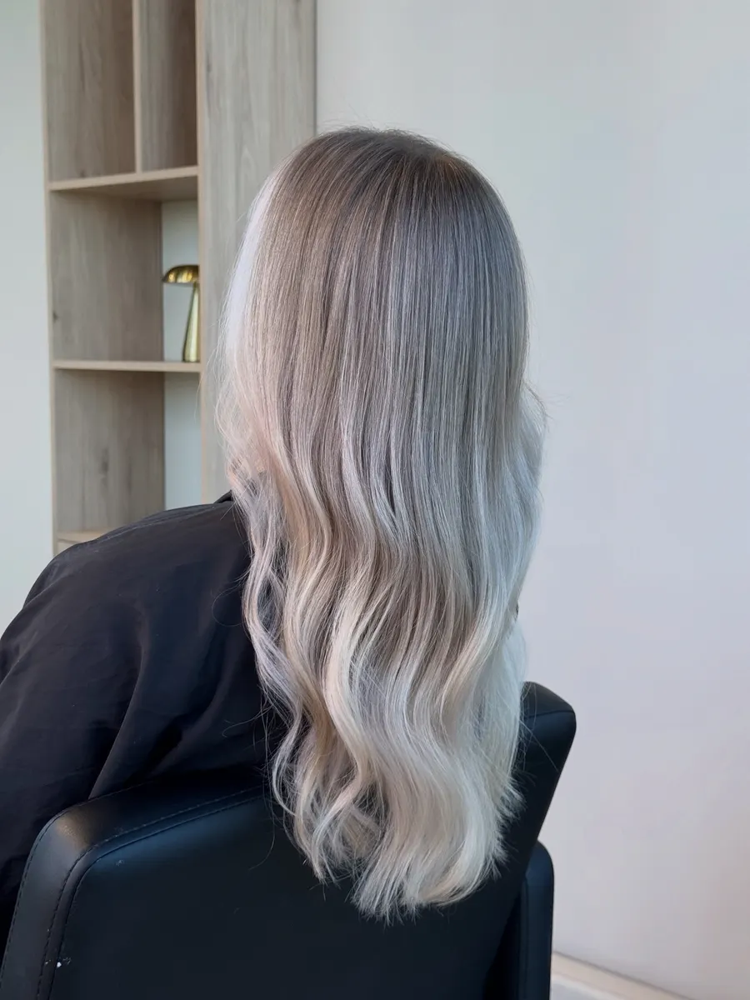
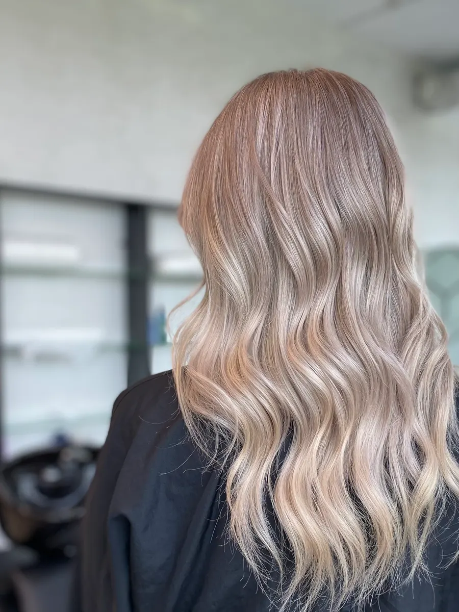

Стрижки · окрашивание · уход · Ижевск
Парикмахерская в Ижевске: окрашивание, стрижки и уход
Мастера четырёх категорий, окрашивание и уход Alfaparf и Davines. Пушкинская, 173А, 4 этаж. Работаем каждый день с 10:00 до 20:00.
- Мастера: от Мастера до Топ Стилиста
- Цена по длине волос и категории мастера
- Ежедневно, 10:00–20:00

Что входит в цену
Входит
- Сложное окрашивание (Two step): осветление в технике, тонирование, базовый уход Alfaparf или Davines, лёгкая укладка
- Контуринг и коррекция корней: осветление, тонирование, базовый уход, лёгкая укладка
- Кофе, чай и конфеты в салоне (из отзыва клиентки)
Отдельно, если нужно
- Доплата за густоту или сложность волос: 2000 ₽
- Скрабирование кожи головы: 800 ₽, только в комплексе с другими услугами
- Экспресс-уход Davines: 1000 ₽, только при стрижке или окрашивании
Цены на стрижки, окрашивание и уход
Цены из карточки салона на Яндекс.Картах. Цена зависит от категории мастера (Мастер, Топ мастер, Стилист, Топ Стилист) и длины волос. Ниже цены у Мастера и Топ Стилиста для средней длины (до плеч).
Стрижки
- Стрижка, Мастеркроме каскада1 500 ₽
- Стрижка, Топ мастеркроме каскада1 900 ₽
- Стрижка, Стилист2 600 ₽
- Стрижка, Топ Стилист3 200 ₽
- Стрижка при окрашивании, Мастерпри окрашивании в салоне1 100 ₽
- Стрижка при окрашивании, Топ Стилист2 700 ₽
Окрашивание, средние волосы (до плеч)
- Один тон без осветления (One step), Мастеросвежить или выровнять оттенок, закрасить седину3 700 ₽
- Один тон (One step), Топ Стилист8 000 ₽
- Сложные техники (Two step), Мастерэйртач, мелирование, балаяж, рельефное окрашивание: осветление, тонирование, базовый уход, лёгкая укладка7 000 ₽
- Сложные техники (Two step), Топ Стилист15 000 ₽
- Коррекция: осветление корней до 4 см, Мастеросветление прикорневой зоны, тонирование, базовый уход, лёгкая укладка6 600 ₽
- Контуринг до 15 прядей, Мастеросветление прядей у лица, тонирование, базовый уход, лёгкая укладка5 000 ₽
Уход и укладки
- Уход Alfaparf, Keune или Davines, короткие и средниецена зависит от категории мастера и длиныот 2 500 ₽
- Уход, длинные волосы (ниже плеч)от 3 000 ₽
- Экспресс-уход Davinesтолько при стрижке или окрашивании1 000 ₽
- Мытьё и сушка по форме, Мастер900 ₽
- Лёгкая укладкамытьё головы плюс 800 ₽1 400 ₽
- Кератин или ботокс, средние волосы6 000 ₽
Длинные и очень длинные волосы дороже: например, один тон у Мастера 4800 ₽ и 5800 ₽. Доплата за густоту или сложность 2000 ₽. Полный прайс по категориям назовёт администратор.
Как проходит визит
- 01
Запись
Пишете в Telegram, звоните или выбираете день и время на сайте.
- 02
Мастер
Выбираете категорию мастера: Мастер, Топ мастер, Стилист или Топ Стилист.
- 03
Пожелания
Мастер выслушивает пожелания и подбирает форму и цвет.
- 04
Услуга
Стрижка, окрашивание или уход, при окрашивании ещё тонирование и лёгкая укладка.
- 05
Кофе
Чай, кофе и конфеты в салоне, как пишут клиенты.



Что отмечают клиенты
Учитывают пожелания
Клиентка пишет, что все пожелания учтены и она ушла с тем, чем хотела.
Окрашивание в сложных техниках
Клиентка называет мастеров лучшими по окрашиванию в технике эйртач в городе.
Уют и сервис
В отзывах пишут про чай, кофе, конфеты и приятные разговоры.
Отзывы с Яндекс.Карт
«Очень люблю Гримерку, сделали стрижку, все пожелания учтены и я ушла с тем, чем хотела. Кофе и конфетки все включено, ну и сервис на высоте. Рекомендую !»
Гузель · 9 мая
«Прекрасное место, лучшие мастера по окрашивание в технике эйр тачь в городе. Отличное большое пространство, огромные панорамные окна с видом на город. Хожу уже более пяти лет к мастеру Венере, очень довольна, изменять не собираюсь. Рекомендую, учитывает все мои пожелания, цвет и качество окрашивание всегда на высоте.»
Софья · 3 сентября 2025
«Девочки, это то, что Вам нужно! Приятное обслуживание, чай, кофе непринужденные разговоры. Мастер слышит тебя и понимает что ты хочешь, это важно. Очень переживала что выход из блонда окажется превращением в болотную выдру, но вышло так, как было задумано! Спасибо девочки, особенно мастеру Дарье Рекомендосьён!)»
Екатерина Р. · 4 июня 2025
Отзывы с карточки на Яндекс.Картах, без правок.
Частые вопросы
Где находится салон?
Ижевск, Пушкинская улица, 173А, 4 этаж.
Как работает салон?
Каждый день с 10:00 до 20:00.
От чего зависит цена?
От категории мастера (Мастер, Топ мастер, Стилист, Топ Стилист) и длины волос: короткие до мочки уха, средние до плеч, длинные ниже плеч, очень длинные ниже лопаток.
Какое окрашивание делаете?
Один тон без осветления (One step) и сложные техники: эйртач, мелирование, балаяж, рельефное окрашивание (Two step). Есть контуринг и коррекция корней.
Сколько стоит стрижка?
У Мастера 1500 ₽, у Топ мастера 1900 ₽, у Стилиста 2600 ₽, у Топ Стилиста 3200 ₽. При окрашивании в салоне дешевле.
Напишите, когда вам удобно
- Адрес
- Пушкинская ул., 173А, этаж 4, Ижевск
- Часы
- Ежедневно 10:00–20:00
- Телефон
- +7 (912) 460-22-06